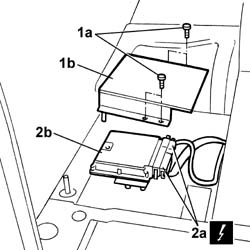

1057B80 GPL INJECTION SYSTEM CONTROL UNIT R R
- Path
- Procedures > 10 ENGINE UNIT > 1057 GPL INJECTION SYSTEM > 1057B GPL MULTIPOINT INJECTION FUEL SYSTEM > 1057B80 GPL INJECTION SYSTEM CONTROL UNIT R R
- Kind
- repair procedure (removal / refitting; the operation number is the code)
- Applies to
- engines: 2.0 16V; all production periods
- Interactive page
- https://sloeber94.github.io/elrnDB-fDct/en/#/244002703
Applies to: engines: 2.0 16V; all production periods
 Removing
Removing
 Refitting
RefittingDisconnect the negative battery terminal.
Op. 7045A12 FRONT PASSENGER SEAT(S) - R.R.
Release the floor trim at the side.
1. Undo the fixing bolts (1a) and remove the protective cover (1b) for the LPG system control unit.
2. Disconnect the electrical connections (2a) and remove the LPG system control unit (2b).
Description | Connector | |
|---|---|---|
2a | LPG control unit | M018A |
Description | Connector | |
|---|---|---|
2a | LPG control unit | M018B |

Applies to: engines: 2.0 16V; all production periods
Refitting
RemovingPosition the LPG system control unit and connect the electrical connections.
Description | Connector | |
|---|---|---|
- | LPG control unit | M018A |
Description | Connector | |
|---|---|---|
- | LPG control unit | M018B |
Fit the protective cover for the LPG system control unit and tighten the fixing bolts to the recommended torque.
Value daNm | Fastening | Component | Ø | |
|---|---|---|---|---|
- | 0.8 | Bolt | M6 |
Restore the position of the floor covering.
Op. 7045A12 FRONT PASSENGER SEAT(S) - R.R.
Connect the negative battery terminal.